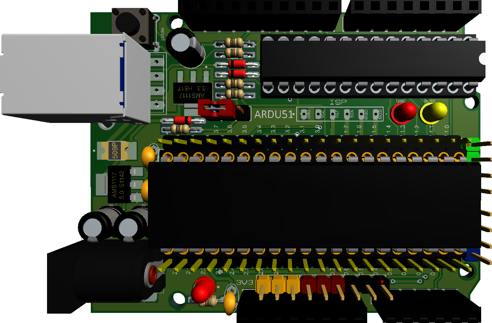

📌 Overview
ARDU-8051 is a low-cost, open-source, Arduino-compatible development board based on the AT89S52, designed for simulation-first embedded systems education.
🌟 Motivation
The 8051 remains central in engineering education, yet teaching hardware has not evolved.
ARDU-8051 modernizes learning while preserving architectural transparency.
🎯 Design Goals
- Preserve classical 8051 pedagogy
- Simulation → hardware continuity
- Low-cost reproducible labs
- Assembly-level transparency
🧩 Platform Highlights
- AT89S52 @ 11.0592 MHz
- On-board USBasp (ATmega8A)
- ADC0804 support
- Arduino UNO compatible headers
- Buffered Port-0
🧠 Interactive Virtual Lab (Demo)
Experiment: Timer-0 LED Blinking (P1.0)
ORG 0000H MAIN: MOV TMOD,#01H LOOP: MOV TH0,#3CH MOV TL0,#0B0H SETB TR0 WAIT: JNB TF0,WAIT CLR TR0 CLR TF0 CPL P1.0 SJMP LOOP END
TF0=0 |
TR0=0

P1 = 00000000 (0x00)